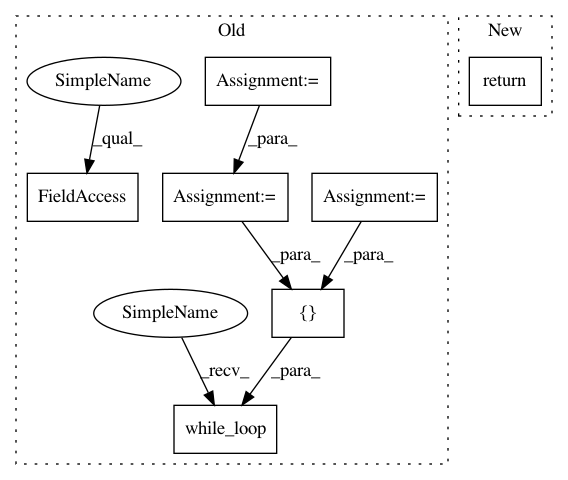

25103f21c5fb2a0b97fd92f95a1ca870f27ce09c,tf_agents/drivers/dynamic_step_driver.py,DynamicStepDriver,run,#DynamicStepDriver#Any#Any#Any#,117
Before Change
if time_step is None:
time_step = self.env.current_time_step()
if policy_state is None:
policy_state = self.policy.get_initial_state(self.env.batch_size)
// Batch dim should be first index of tensors during data collection.
batch_dims = nest_utils.get_outer_shape(
time_step, self.env.time_step_spec())
counter = tf.zeros(batch_dims, tf.int32)
[_, time_step, policy_state] = tf.while_loop(
cond=self._loop_condition_fn(),
body=self._loop_body_fn(),
loop_vars=[
counter,
time_step,
policy_state],
back_prop=False,
parallel_iterations=1,
maximum_iterations=maximum_iterations,
name="driver_loop"
)
return time_step, policy_state
After Change
time_step: TimeStep named tuple with final observation, reward, etc.
policy_state: Tensor with final step policy state.
return self._run_fn(time_step=time_step, policy_state=policy_state,
maximum_iterations=maximum_iterations)
// TODO(b/113529538): Add tests for policy_state.
def _run(self,
time_step=None,
In pattern: SUPERPATTERN
Frequency: 3
Non-data size: 7
Instances
Project Name: tensorflow/agents
Commit Name: 25103f21c5fb2a0b97fd92f95a1ca870f27ce09c
Time: 2019-03-25
Author: ebrevdo@google.com
File Name: tf_agents/drivers/dynamic_step_driver.py
Class Name: DynamicStepDriver
Method Name: run
Project Name: tensorflow/agents
Commit Name: 25103f21c5fb2a0b97fd92f95a1ca870f27ce09c
Time: 2019-03-25
Author: ebrevdo@google.com
File Name: tf_agents/drivers/dynamic_step_driver.py
Class Name: DynamicStepDriver
Method Name: run
Project Name: reinforceio/tensorforce
Commit Name: a4c4a4f2d33081806397784f96b113d5b3b32c9a
Time: 2018-02-08
Author: mi.schaarschmidt@gmail.com
File Name: tensorforce/core/memories/prioritized_replay.py
Class Name: PrioritizedReplay
Method Name: tf_retrieve_timesteps
Project Name: tensorflow/agents
Commit Name: 25103f21c5fb2a0b97fd92f95a1ca870f27ce09c
Time: 2019-03-25
Author: ebrevdo@google.com
File Name: tf_agents/drivers/dynamic_episode_driver.py
Class Name: DynamicEpisodeDriver
Method Name: run